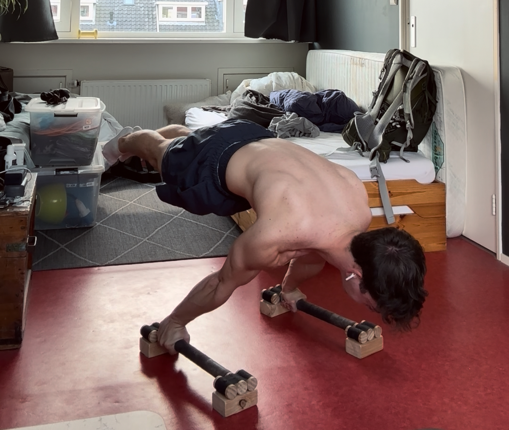
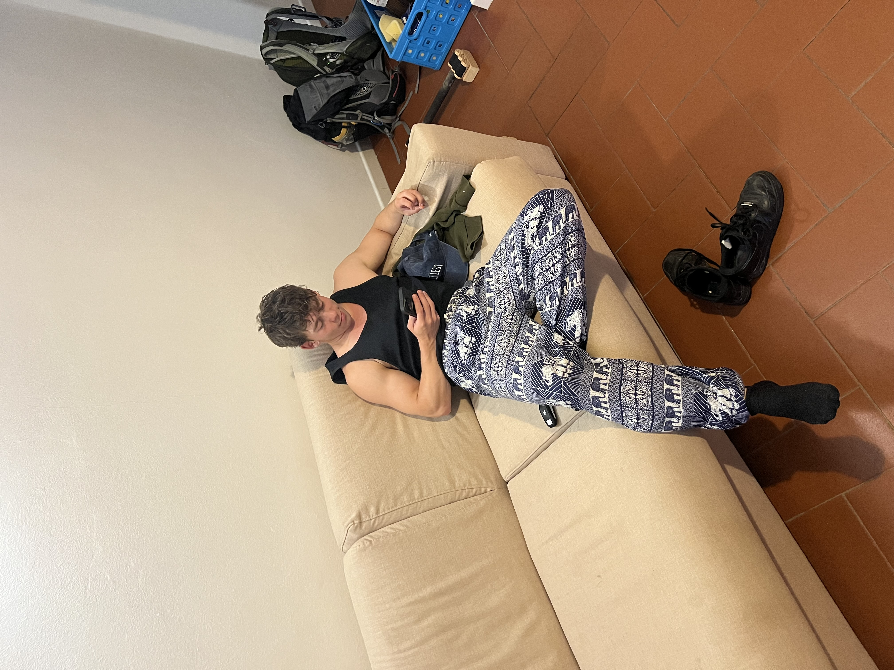
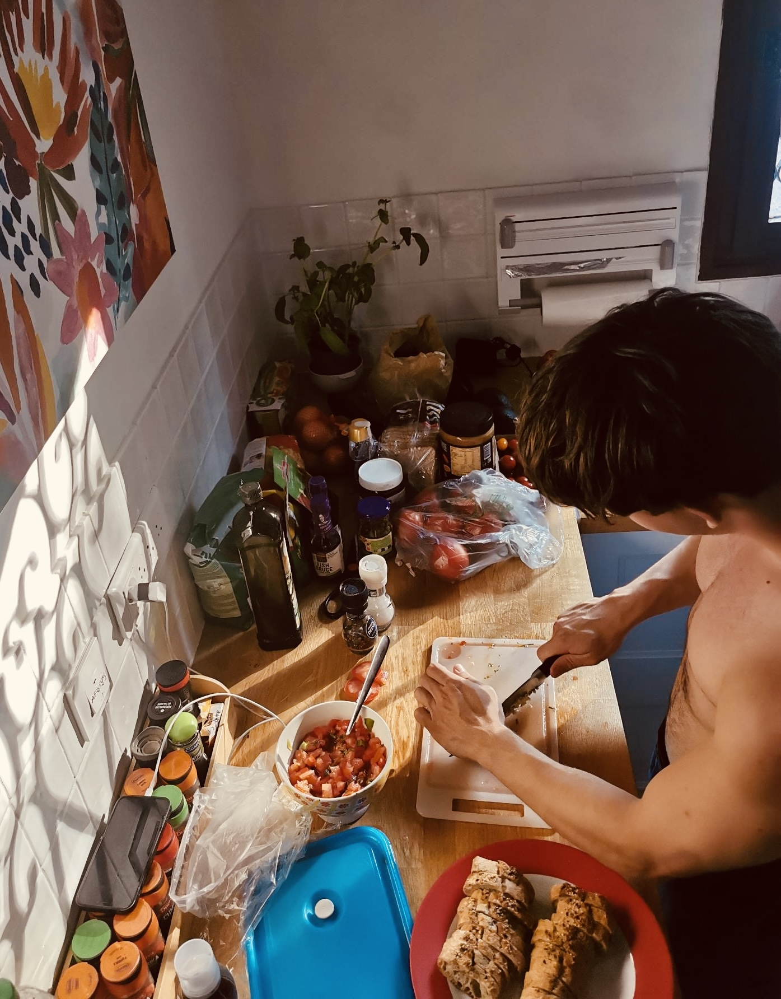
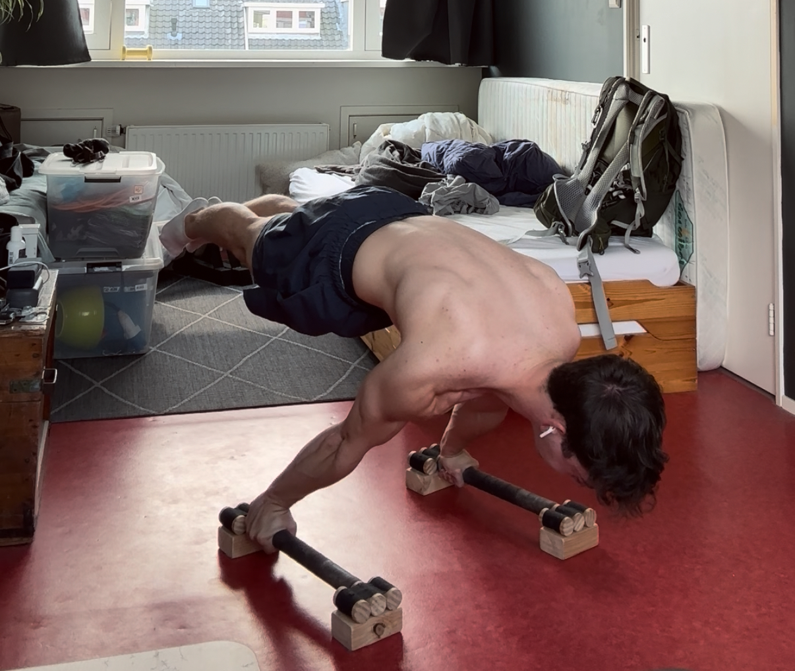
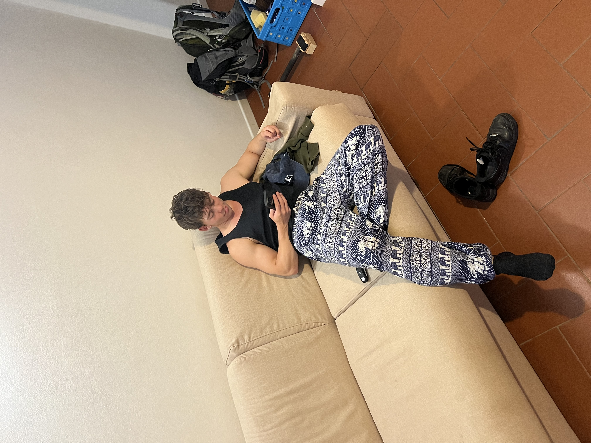
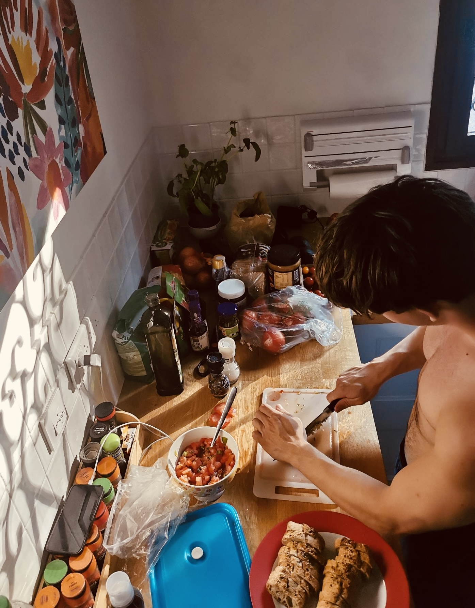

IoT check-in system for the HvA (Team)
At the end of the 9 weeks we had an expo where we won the `Best business opportunity` out of all projects from all minors and masters at the HBO-ICT.
We made an Internet of Things check-in system that consists out of an embedded system and a web environment for a real client from the HvA. We used a Raspberry Pi 4, esp32, a display, a camera to read the details from the student card and a NFC reader to make checking in and out fast after the first time you have registered your student card. On the website the teachers could link devices to events by linking the event with the mac address of the device. They could see upcoming, open and closed events, they could link student to events, they could see which student is/was present or not at the event, and we build some more nice UX features to meet the users needs. The client was very enthusiastic and was planning to use the device next school year.
Skills used:
- PHP & MySQL
- C++
- HTML, CSS & Javascript
- Scrum